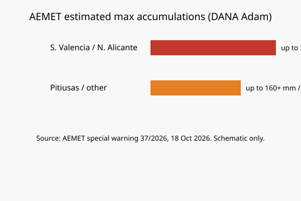

España · meteorología · 18 de octubre de 2026
La AEMET activa aviso rojo por lluvias torrenciales asociadas a la DANA Adam en el litoral sur de Valencia y norte de Alicante.
_01.jpg)
Lo que se acuerda entre las redacciones
El domingo 18 de octubre de 2026, la Agencia Estatal de Meteorología (AEMET) mantiene el aviso rojo (peligro extraordinario) por lluvias muy intensas y persistentes en el litoral sur de Valencia y el litoral norte de Alicante, asociado a la DANA Adam, la primera de gran impacto de la temporada. El aviso especial número 37/2026 describe acumulados que pueden superar 60-90 mm en una hora y 200-300 mm en 12-24 horas en las zonas más expuestas, con riesgo de inundaciones locales y crecidas repentinas. También hay avisos naranja en otras zonas de la Comunitat Valenciana, Baleares, Murcia, Andalucía y Cataluña, y amarillos en más comunidades. Se han emitido ES-Alert en varias comarcas.
Los comunicados de AEMET y las crónicas de EFE, Europa Press y medios regionales coinciden en los niveles de aviso, las zonas, las cantidades estimadas y la duración hasta el lunes 19. Se han reportado inundaciones, cortes de vías y al menos una víctima mortal en el área de Barcelona relacionada con las lluvias. Estos datos proceden de la autoridad meteorológica y de los partes de Protección Civil.
Lo que es solo una cita
Las estimaciones de acumulados son previsiones de modelos, no registros finales de estaciones. Los comentarios sobre el impacto “catastrófico” posible son advertencias de riesgo, no evaluaciones post-evento. Las declaraciones políticas sobre la gestión de emergencias son posiciones de partidos, no mediciones de precipitación.
Mecanismo que el lector necesita
Una DANA (Depresión Aislada en Niveles Altos) es una bolsa de aire frío en altura que, al interactuar con aire húmedo mediterráneo, genera precipitaciones intensas y localizadas. El litoral valenciano y alicantino tiene historial de episodios de este tipo, incluido el de 2024. Los suelos saturados de lluvias previas aumentan el riesgo de escorrentía rápida en ramblas y zonas urbanas. El aviso rojo es el nivel máximo de AEMET y activa protocolos de emergencia autonómicos. Los ES-Alert son mensajes masivos a teléfonos móviles en las zonas afectadas.
La distribución de las lluvias no es uniforme; las mayores cantidades se esperan en franjas concretas del sur de Valencia (Safor, Ribera) y norte de Alicante (Marina). Las Pitiusas (Ibiza y Formentera) también están en niveles altos. Los datos finales de acumulados y daños se publican después del episodio por AEMET y las comunidades autónomas. Hasta entonces, las cifras son previsiones.
Lo que esta historia no es
No es un informe final de daños o víctimas. No es una afirmación de que se hayan alcanzado ya los 300 mm en todos los puntos. No es un análisis de políticas de vivienda o infraestructura. La fotografía es una toma de tipo de una playa valenciana en condiciones normales, no del temporal.

Artículos fuente y puntuaciones
| Medio | Titular | T | N | C |
|---|---|---|---|---|
| AEMET | Aviso especial. Chubascos y tormentas muy fuertes y persistentes (nº 37/2026) | 98 | 0 | 100 |
| EFE / El Periódico | DANA ADAM | Aviso rojo por lluvias muy intensas en Valencia, Alicante, Ibiza y Formentera | 95 | 0 | 98 |
| Infobae / agencias | Peligro extremo por lluvias en Valencia y Alicante: la Aemet activa el aviso rojo | 94 | 0 | 97 |
Imágenes: Wikimedia Commons fotografía de tipo de playa valenciana vía Special:FilePath. El gráfico es SVG original. Las leyendas indican que no es el evento. onerror al SVG local. Sin CDN de noticias como única fuente. Sin crossorigin.